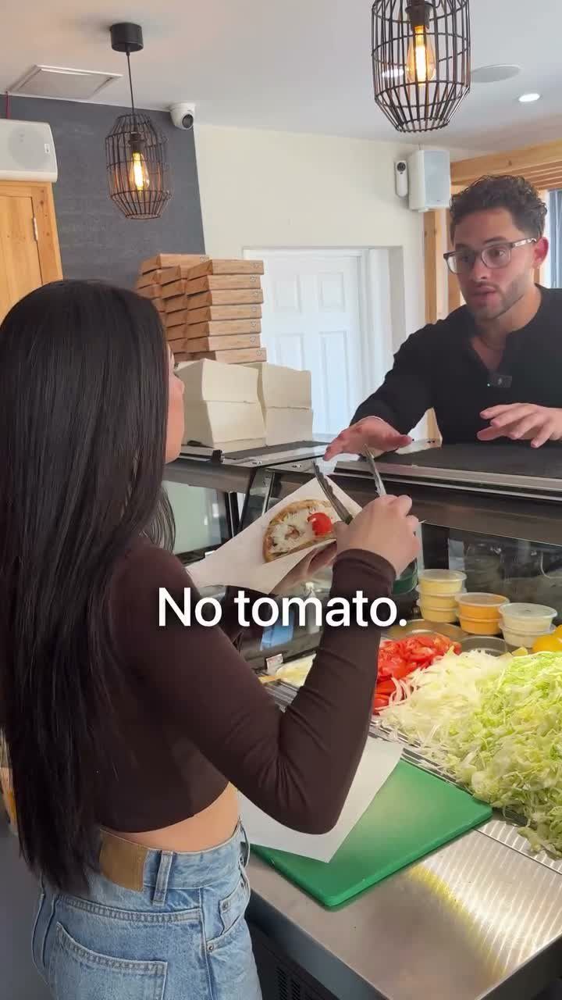
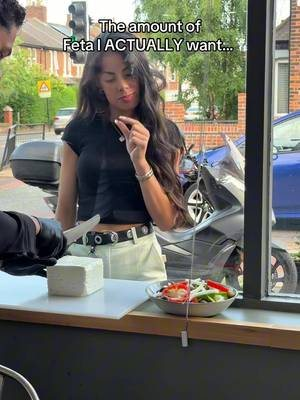
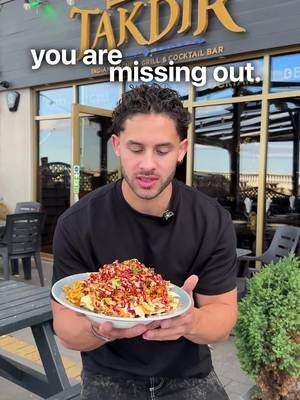
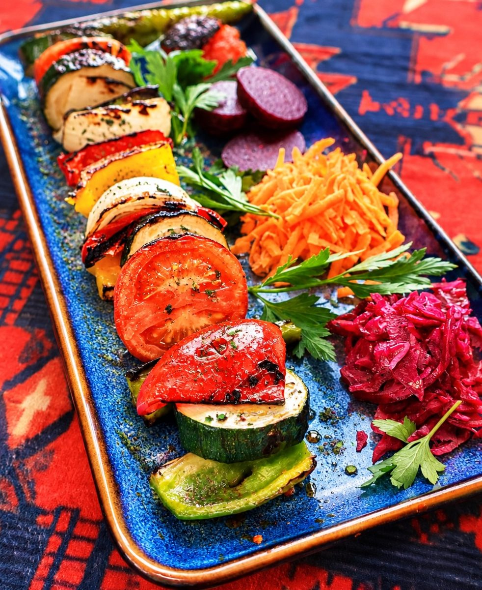
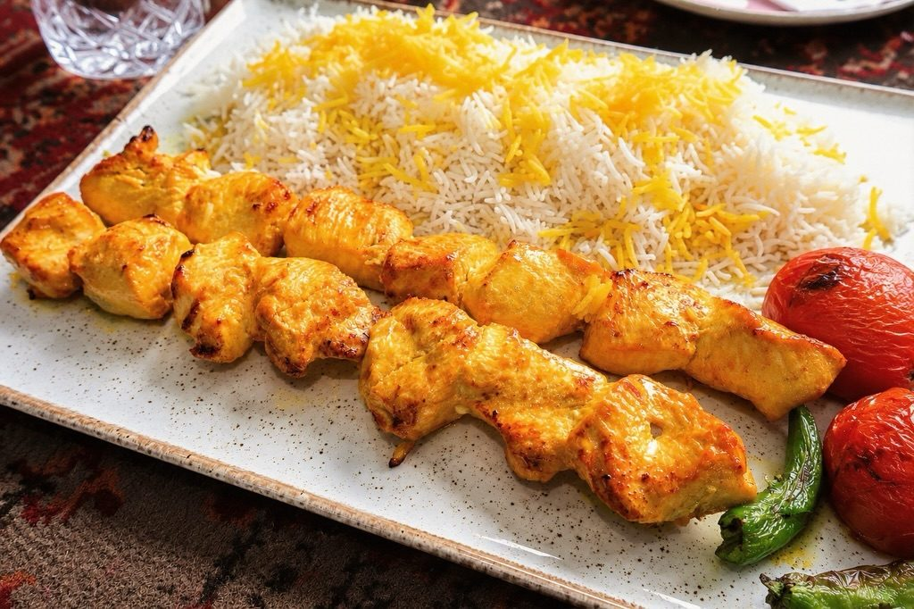
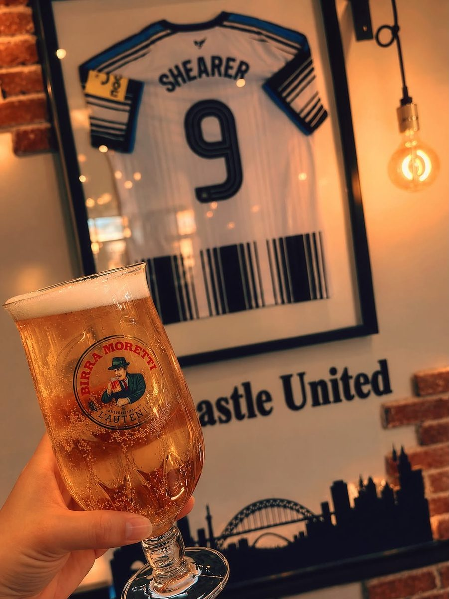
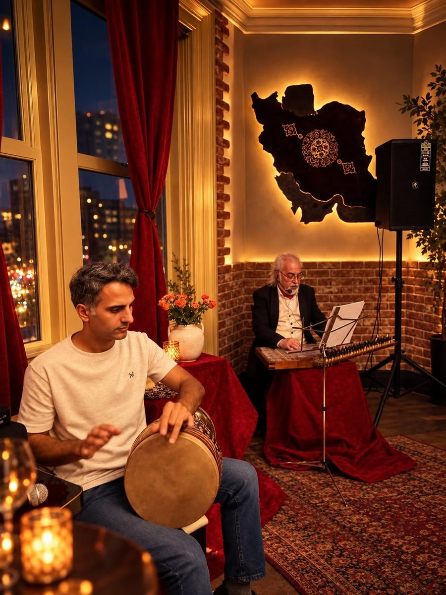
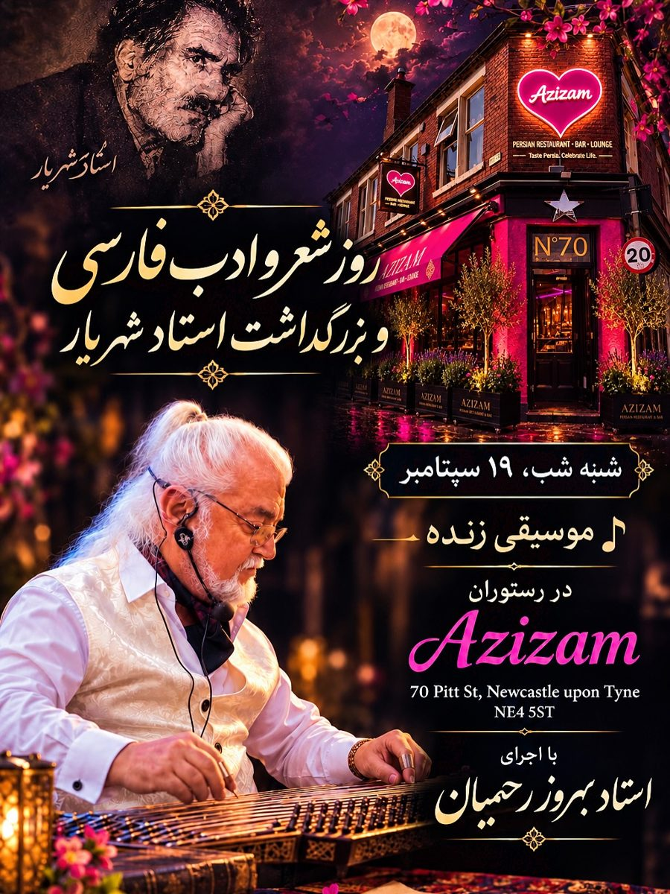
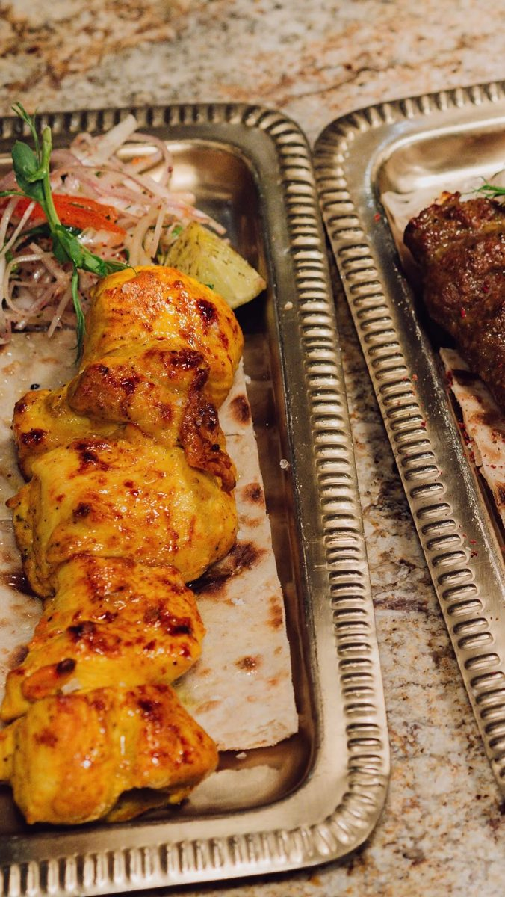
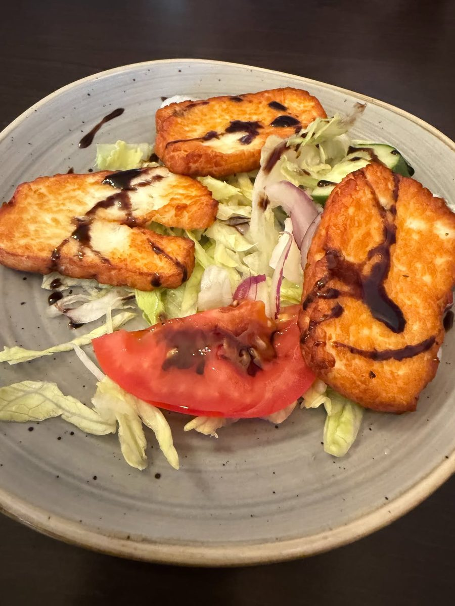

Prepared for Azizam Restaurant & Bar9 October 2026
AzizamRestaurant & BarxFusion Creative
Marketing audit
Live music, saffron and a pint on Pitt Street. Now let Newcastle see it.
Your live music night with Behrouz Rahimian drew 59 likes, the most of any post we could measure. Your Friday night post in English drew 12. Azizam is two places at once, a Persian restaurant and a matchday pub, and right now the Persian nights are reaching people far better than the pub posts. We read your Instagram, your Meta ads and two Persian venues in Newcastle, and set them next to what has worked for the restaurants we film. This is what we found, the videos we would make, and our rates.
Azizam opened on Pitt Street in May with Persian food, a proper bar and a room with real character: the lit map of Iran, red velvet, live music. You post, you run Meta ads and you put on culture nights with live music. What is missing is short video with people in it, so Newcastle locals and matchday crowds who have never tried Persian food have a reason to book this week.
781
Instagram followers, from 26 posts
12 to 59
likes on the posts where Instagram shows a count
0
Meta ads live today, about 19 in the library from your page
8 of 8
ads we could see were posters or photos with text
What is already strong, and worth building on
A menu with real stories: Joojeh Kabab marinated in saffron, smoky grilled vegetables, and Kalleh Pacheh, which you have offered for weekend breakfast.
A room built for the camera: the glowing map of Iran, red curtains, Persian rugs and the city lights through the window.
Cultural nights with live music, like the Mehregan night and the poetry and music night, which drew your strongest response.
A second audience on your doorstep: matchday pints, a Shearer shirt on the wall and a Sunday dinner with all the trimmings.
Moments money cannot buy. A guest said yes to a proposal in your restaurant this week, and you shared it.
You do not need a new menu or a new room. You need short video of the food, the music and the people, posted on a plan, so both of your audiences have a reason to book.
02 · What has worked for places like yours
Real people, in the venue, doing something worth watching.
Nine videos we planned and filmed for restaurants we work with, each a different format: a skit, a dish moment, a trend, a challenge, a launch, a new dish, an offer, a hero product and a local call-out. Every one gives people a reason to watch and a reason to visit.
70M
views on one reel for New Greek in Newcastle
3.5M
views on one reel for Takdir in Whitley Bay
+40%
weekly sales for New Greek, in the owner's own words

Skit, 70M viewsNew Greek, Newcastle: "There's always the one impatient customer." A skit at the counter.

Dish moment, 3.3M viewsNew Greek, Newcastle: "The ONLY way to eat a Greek salad." One dish, turned into something people argue about.Trend, 535K viewsTakdir, Whitley Bay: A trending format, filmed in the restaurant within days of it taking off.Challenge, 255K viewsNew Greek, Newcastle: "5 bites or less wins £20." A challenge people come in to try.Launch, 92K viewsNew Greek Bakery, Newcastle: "The Taste of Greece has landed in Newcastle." An opening, announced on video.

New dish, 90K viewsTakdir, Whitley Bay: "Have you tried our Nachodoms?" A new dish, introduced by a person, not a menu photo.Offer, 67K viewsTakdir, Whitley Bay: "All for £20? Yes please." An offer shown on camera, not just posted as a graphic.Hero product, 60K viewsNew Greek Bakery, Newcastle: "The best sandwich in Newcastle?" One product, one question.Local call-out, 44K viewsThe Greek Spot, Middlesbrough: "Attention Middlesbrough gyros lovers." A video that speaks to one town.
A reason beats a nice shot. A kebab on its own rarely travels. The same kebab with a question, a challenge or a first reaction does.
The venue is the set. Your map wall, your bar, your grill. We film in the place people will visit.
It is planned, not luck. We know which formats work before we arrive, and we pick the mix for your menu and your week.
View counts from our own client dashboard, checked 9 October 2026. Sales figure from the New Greek owner's own review.
03 · Your website
No website yet, so your ads have nowhere to land.
Azizam has no website, and your ads point people to Instagram or a phone number. These are the things we would fix so every video and every ad ends in a booking.
What we saw
Why it matters
Fix
There is no website to book on
Your ads point to Instagram, where a new visitor sees 26 posts and no menu to browse.
A simple one page site with the menu, opening hours, a map and a booking button.
No Meta pixel is possible
Without a website, nothing records who looked at your menu, so you cannot show them your next video.
Add the Meta pixel to the new page so ads reach people who already showed interest.
Your ads are short bursts of posters
All eight ads we could see were posters or photos with text. The recent ones ran for two to five days each.
Run your best short video, with people in it, and keep it running for longer.
One ad ran after its date had passed
The Sunday dinner ad ran again from 5 September with "starting this Sunday 23/08" and the Liverpool match on it.
Give every ad a new date, or no date at all.



Photos from your own Instagram. The grill, the saffron rice and the matchday bar are exactly what we would film.
04 · Your social channels
Your best posts are nights, not adverts.
781
Instagram followers
59
likes on your live music night, your best post we could measure
45
likes and 12 comments on the poetry and music night invite
12
likes on "Friday night plans? Sorted."
Azizam posts most weeks, in Persian and in English. Instagram only showed like counts on four recent posts, and the pattern is clear:
Culture beats promotion. The live music night (59 likes) and the poetry night invite (45 likes, 12 comments) beat the Friday night post (12 likes).
Your English audience has not found you yet. Matchday, Sunday dinner and pint posts are aimed at Newcastle locals, but they are mostly graphics and single photos, the formats that travel least.
Your strongest moments are photos and posters. The proposal, the live music and the culture nights all happened. Short video is how they reach people who were not there.
What this means. People respond to real nights in your venue. Short video of those nights, plus the food and the matchday crowd, posted on a plan, is how Azizam reaches people who have never tried Persian food.
Source: instagram.com/azizamnewcastle public profile and posts, and the Meta Ad Library (United Kingdom), checked 9 October 2026.
05 · Two Newcastle Persian venues
Who is winning attention for Persian food in Newcastle, and how.
We looked at two Persian restaurants in Newcastle on Instagram and in the Meta Ad Library. Our Ad Library search for Persian restaurants in Newcastle found no live ads at all, while a search for restaurants in Newcastle found plenty of venues advertising. Checked on 9 October 2026.
Venue
Instagram
Meta ads
What gets attention
Best recent post
Azizam Restaurant & Bar Pitt Street
781
None live, about 19 in the library
Culture nights, live music
59 likes
DOOD Quayside
13K
None live, 1 in the library
Food off the grill on video, Sunday roasts, the team
819 likes, a reel from the grill to the pass
Persia Restaurant Marlborough Crescent
1,083
None, ever
Creator visits, Restaurant Week
143 likes, a creator's Restaurant Week visit
What the numbers say
DOOD shows the grill sells itself on video. A short reel of kebabs coming off the grill drew 819 likes. Their other recent posts drew 19 to 84.
Persia shows people trust other people. Their own posts drew 4 to 17 likes. Two creator visits drew 89 and 143.
We found no live ads for Persian food in Newcastle. Neither venue has an ad live. When your videos are working, there is space for you to be the Persian restaurant Newcastle sees.
Sources: public Instagram profiles and the Meta Ad Library (UK), 9 October 2026.
06 · What is working in your market
What is already working, in Newcastle and in your account.
Two of your posts and two from Persian venues nearby. The common thread is people, and a reason to be there.

Your music nightAzizam: live music with Behrouz Rahimian, your best measured post at 59 likes.

Your inviteAzizam: the poetry and music night invite, 45 likes and 12 comments.

From the grillDOOD: "Straight from the Mangal to the pass", a reel with 819 likes.

A creator visitPersia Restaurant: a creator's Restaurant Week visit, 143 likes.
1
Nights, not adverts
The live music, the culture nights, the matchday crowd. People share the nights they wish they had been at.
2
A reason to come this week
The next culture night, Sunday dinner before the match, weekend breakfast. Every video ends with one.
3
People on screen
Your team, your musicians and your regulars, with permission. Skits and challenges, filmed in the room.
07 · Twelve videos we would make
Built from your room, your grill and your regulars.
Every concept uses something you already have. Six are built to bring people in this week. Six are built to keep your Instagram growing.
Videos that bring people in
6 concepts
Skit
First time at a Persian restaurant
"When your mate says it's just a kebab."
A Geordie regular orders the Joojeh Kabab and the saffron rice arrives. Text overlay does the talking.
Why: turns curiosity about Persian food into a reason to book.
Challenge
Name that dish
"Guess the Persian dish, win your dinner."
Matchday regulars try to name three dishes from the menu.
Why: challenges are among the formats that travel furthest for our restaurants.
Matchday
Before kick-off on Pitt Street
"Sunday dinner, a pint, then the match."
The bar filling up in black and white, plates out, Shearer on the wall.
Why: speaks to the crowd already walking past your door.
Night
A culture night, filmed
"POV: your first Persian music night in Newcastle."
The santur, the drum, the full room and the food coming out.
Why: sells the next night before you announce it.
Grill
Off the coals
"Every kebab, straight from the grill."
Skewers, smoke and saffron, cut to the beat.
Why: the format that earned DOOD 819 likes.
Breakfast
Kalleh Pacheh, explained
"Trying one of Iran's most beloved breakfasts."
A first timer tries Kalleh Pacheh with Persian tea and fresh bread.
Why: a reaction video that gives people a weekend plan.
Organic that builds the audience
6 concepts
Series
One dish a week
"What is Joojeh Kabab?"
One dish from your menu, explained in 20 seconds.
Why: a weekly series that teaches Newcastle your food.
Team
Meet the grill
"The person behind every kebab."
One person at a time, 20 seconds each.
Why: people visit people.
Room
The map wall
"Why there is a map of Iran on our wall."
The story of the room and the name Azizam.
Why: gives followers a reason to feel part of the place.
Moments
Celebrations here
"She said yes, at table six."
Proposals, birthdays and family nights, with permission.
Why: brings in bookings for celebrations.
Bar
Behind the bar
"Our bartender's pour, no edits."
Cocktails and pints, made on camera.
Why: shows the bar is as good as the kitchen.
Locals
Pitt Street asks
"Asking matchday fans what to order."
Quick answers from customers on the way out.
Why: real recommendations from neighbours.
08 · The plan, month by month
A plan that starts with the nights you already run.
Week 1
Plan and set up
A call to pick the first twelve videos, plan a simple booking page, and set up the Meta pixel on it.
Week 2
First filming day
A matchday Sunday dinner and an evening service, filmed in one weekend.
Weeks 2 to 4
Posting on a plan
Videos go out on set days, in English and Persian, each ending with a reason to come this week.
Month 2
More of what works
We look at what brought people in and film more of it, plus your next culture night.
Month 3
Review together
We report what the videos reached, what they brought in and what to do next.
Every month you get: filming in your venue, edited short videos, posting on a plan, and a simple monthly report. You keep every video.
09 · Our rates
Two ways to work with us.
Both include filming in your venue, editing, posting and managing your Instagram and TikTok. Three month minimum, then rolling.
Core
£899
a month, 10 to 12 videos
One filming day a month in your venue
10 to 12 edited short videos
Posting and captions on Instagram and TikTok
A monthly report
Growth
£1,250
a month, 20 to 25 videos
Two filming days a month
20 to 25 edited short videos
Posting, captions and community replies
A monthly report and planning call
Want ads as well? Once the videos are working, we can run Meta ads across Newcastle for you, to locals and matchday crowds. That is a separate service, and we would only suggest it when the content is ready.
10 · Who we are, and next steps
A Newcastle team that films, edits and posts for restaurants.
We come to you, film in your venue, edit in house and post on a plan. We measure what matters to a restaurant: covers, bookings and repeat customers, not likes.
+40%
weekly sales for a Newcastle restaurant, in the owner's own words
87M+
views on content we have made for that one restaurant
70M
views on a single reel, planned and filmed in the venue
Jay Williams and Anya Davey, the founders of Fusion Creative. We film and run ads for businesses across the North East from Newcastle, a few minutes from Pitt Street. We would be the people in your venue with the camera, and the people you call about the plan. Our team of editors turns every filming day into finished videos, and either of us can be on camera when a video needs a presenter.
Next steps
A 20 minute call, or a coffee at Azizam, to pick the first videos.
Then the first filming day on a matchday or a culture night.


Your best posts are nights, not adverts.
Azizam posts most weeks, in Persian and in English. Instagram only showed like counts on four recent posts, and the pattern is clear:
What this means. People respond to real nights in your venue. Short video of those nights, plus the food and the matchday crowd, posted on a plan, is how Azizam reaches people who have never tried Persian food.
Source: instagram.com/azizamnewcastle public profile and posts, and the Meta Ad Library (United Kingdom), checked 9 October 2026.